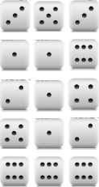
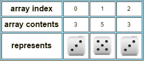

Assignment 3: Dice Simulation
Dice Simulation
In this assignment you will simulate the throw of a number of Dice. This will require using what you have learned in Module 2 and Module 1 but will also require the use of arrays as taught in this module.
We ask that you follow these instructions carefully, step-by-step, so as to develop your code by concept refinement. Each concept is first described, and then your group takes steps to implement the concept. Ask questions as needed to complete one step before going on to the next.
Procedures
In the steps described below, pictures are shown of dice to illustrate the concepts involved in this assignment. You will not really be using or displaying the pictures. Instead, your program will simulate throwing dice and you will measure the properties of interest.
-
You need two pieces of information from the user:
-
How many dice will be used in this simulation?
- For the purposes of this document, let us say that D dice are used.
-
As an example, if D is 3, then a given throw could be:
-
How many times will the dice be thrown?
- For the purposes of this document, let us say that the dice will be thrown
Ttimes. - As an example, if T is
5, then the dice could be thrown as follows:
Figure 1:

- For the purposes of this document, let us say that the dice will be thrown
At this point,
- Create a class
Dicein thelab3package (which is in thelabssource folder). -
Decide on meaningful variable names for the concepts introduced so far:
- The number of dice used in this simulation.
- The number of times the dice are thrown.
- Insert code to obtain the values for these variables from the user. If you have forgotten how to do this, look at examples from previous studios or look at the code from lecture.
- Test your code at this point, printing out the values you have received.
-
-
Now let’s simulate the dice rolls. For the purposes of this lab, let’s say that each die is six-sided, and therefore labeled to show the values 1…6. If you have time, you might consider how to change your code to accommodate dice that have fewer or more than 6 sides.
You need to iterate, assigning each die’s roll the value that it shows in your simulated roll. Pseudocode for this activity is shown below:
// Pseudocode // for each die d // randomly throw d to obtain the value v, shown face-up on d // end-
How should you represent the value v shown on the die?
Talk this over as a group. While it is true that in computer science most sequences start at 0, you should pick a representation that helps you solve the problem at hand.
Hint: You will need to sum the values shown on the dice. You should therefore pick a representation that makes this easy.
-
How will you compute (by simulation) the value v for each die d’s roll?
You have seen this before: use some simple computation based on
Math.random()to compute a value in your representation of choice for each die’s roll.
-
-
You next need a mechanism for remembering the value of each die as it is thrown. Consider the example shown in Figure 1. After the first throw, we have:
You must provision an array with one slot per die to hold the results of each throw. If
Dis the number of dice, then such an array might fit into your program as follows:int[] diceThrown = new int[D] // for each die d // randomly throw d to obtain the value v, shown face-up on d // record die d's role in the diceThrown array // end // At this point, your dieThrown array has an entry that shows each die's valueThink about how to deploy the above array to remember each die’s value after it has been thrown. Instantiate the array in your code and make sure its size is exactly right for the task at hand.
For the example abouve, your array might look like:

-
Insert code to print the array’s values, and run your program several times to make sure the values look reasonable.
-
Around the code you have currently programmed, insert a loop so that your code iterates T times.
- Recall T was a value prompted from the user. It is the number of times we will throw the dice. You do not need a different or larger array than the one you already have. You only need to remember the dice values after each throw. You will not be required to remember the values from all of the throws.
-
Run your program and examine the values printed from the T iterations. They should continue to look reasonable (albeit random).
-
Suppose we are interested in how often all of the dice show the same value after they are thrown within one of the T iterations. In the example shown in Figure 1, this happened 1 in 5 times (so, 20% or 0.2).
What are the steps needed to make a concept real? Some related questions are:
-
How can we determine if all dice have the same value after they are thrown? Fortunately, you have stored the dice values so they can be examined after they have all been thrown.
-
How do we keep track of the number of times they all have the same value?
-
How do we report the fraction of times they all have the same value?
Take those steps now so that your code can determine when all of the dice values are the same. Arrange for your program to print out the fraction or percentage of times the throws result in the same value for all dice.
-
-
Suppose we are next are interested in the sum of the dice values.
Make this concept real taking the usual steps
-
Arrange for your program to print out the dice values’ sum each time the dice are thrown. In addition to any output you already produce, you should have T more lines of output, one for each iteration of throwing the dice.
Make sure the results seem reasonable.
-
Suppose we are interested in how often each possible sum occurs as the dice are thrown. In the example in Figure 1, the sums were seen as follows:
Sum Number of times Sum was seen 7 1 8 2 11 1 18 1 To make this concept real, have the following discussion: * What values could the sum possibly take, given that there are
Ddice? * Based on what we have studied thus far, kind and type of variable is needed to keep track of the sums? * Where in your code should you update how often a sum occurs? -
Arrange for your program to produce output (formatted as you like) that shows how often each sum occurs as a fraction or percentage of all of the throws. It’s OK to report
0for sums whose values did not occur.- For
Ddice, which sums occur most frequently? You can determine this by running your program on different numbers of dice, but using enough iterations to show typical behavior.
- For
Submitting your work (read carefully):
To submit your work, contact the instructor or a TA. They will walk you through the submission process. Be prepared to show them the work that you have done and answer their questions about it!